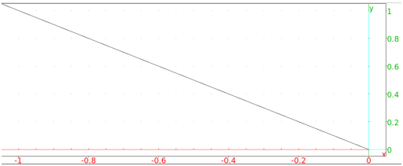

13.7.2 Half-lines in the plane: half_line
See Section 14.5.2 for half-lines in space.
The half_line command finds rays.
-
half_line take two arguments:
P,Q, two points (which can also be given as a list).
- half_line(P,Q)
returns and draws the ray from P through Q
Example
Input:
half_line(0,-1+i)
Output:
